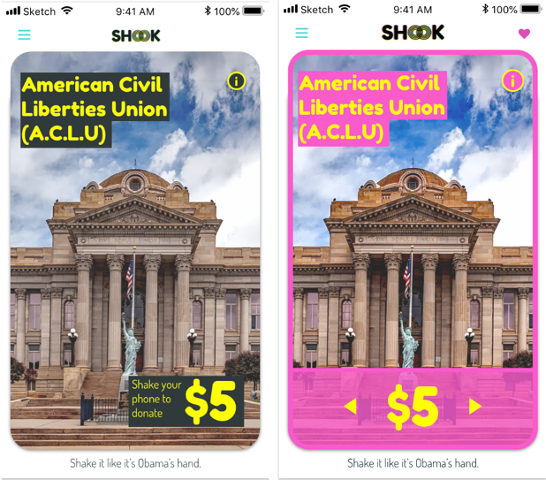
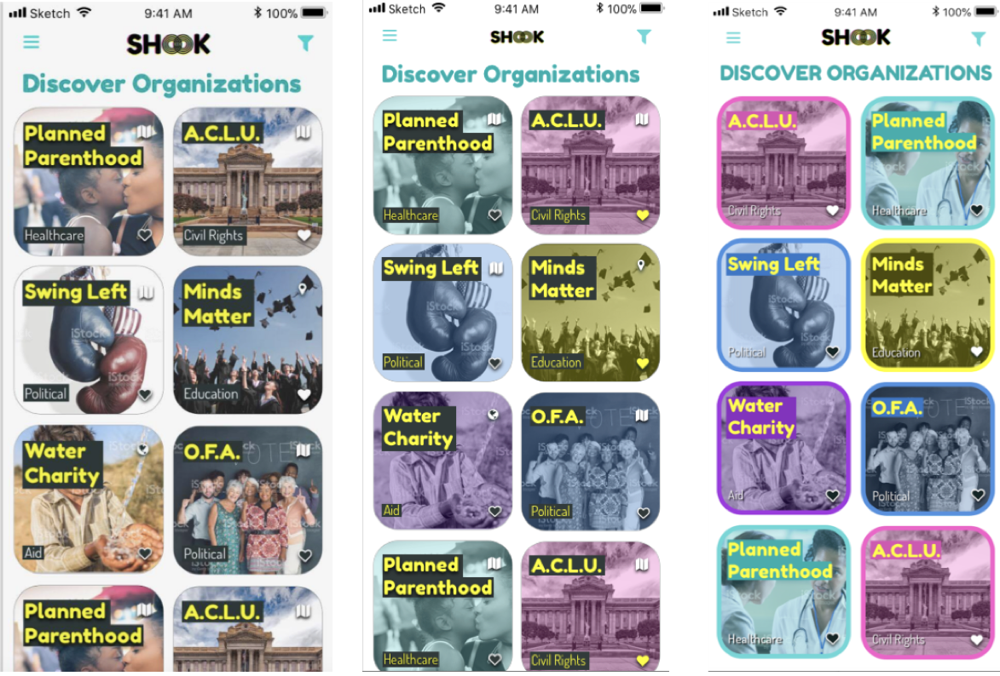
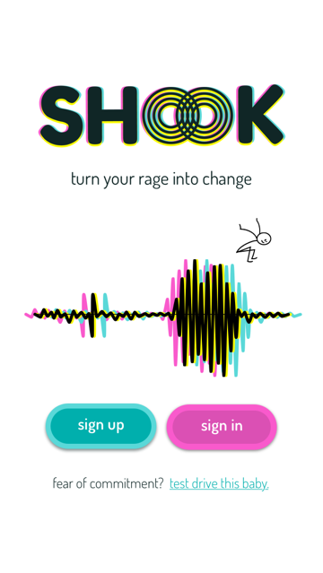
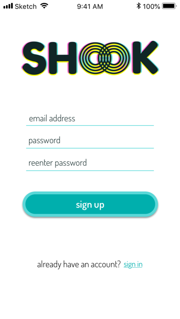
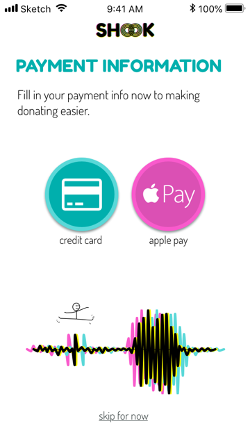
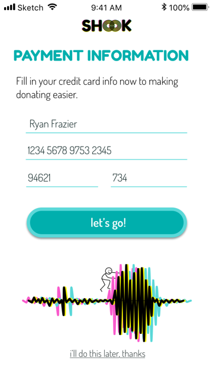
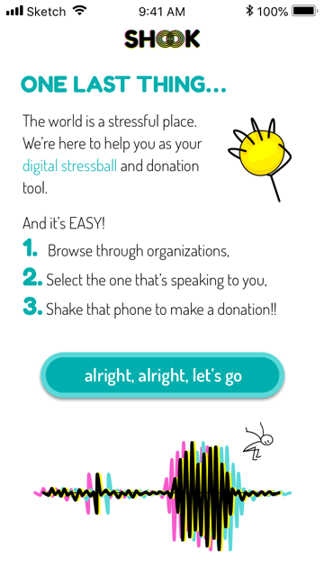

Summary
The world is stressful. People want to do something about it, but their lives are busy. Shook is an iPhone app to make donations and contributions to nonprofits of political organizations easy, quick, and fun.
Problem
People are overwhelmed by negative news on a daily, hourly, and even minute to minute scale. And people want to do something about it. But we are all so busy! People want to donate easily to charities that support their values.
Solution
Shook! When the world feels overwhelming, and you feel like we are about to enter into a nuclear war, all you have to do is shake your phone. You get to donate small amounts of money on your own terms, donating to the causes that you care about most.
Research
Survey Highlights
| 93% | of respondents mentioned being inspired into action after reading the news resulting most frequently in donation charities or signing a petition. |
| 87% | most often make contributions through a charity's website |
| Likes: | Easy to put in credit card information |
| Dislikes: |
|
Competitive Analysis
| Share the Meal | Donate a Photo | One Today | |
|---|---|---|---|
| Strengths |
|
|
|
| Weaknesses |
|
|
|
| Opportunities |
|
|
|
| Threats |
|
|
|
Wireframes
My wireframes incorporated the User Stories and additional ideas I had along the way. I incorporated the user stories into the wireframes, and wrote new ones as I puzzled through the best path for users inside the app. It started off with sketches of any idea I could think of and ended with a card. My idea for making the donation happen... shake your phone to donate!
Branding
The whole time while working on Wireframes and Prototypes, I created a mood board which inspired colors, fonts and styles. I was drawn to bright colors that popped and felt young, and energetic. I especially picked up on the yellow block letters I was finding in news sites, and wanted to use that to some extent in the design.
I did many iterations of logos, and landed upon the shook logo where it looks like there may have been a printing error, or like the colors making up the logo are being shaken out. The center o’s are also reminiscent of shockwaves.
User Testing
Preference testing informed my decisions to use colors to highlight different organizations
The mockup started with a simple card. After user testing, I incorporated bright colored outlines that make the design more approachable.
The discover organizations page became more simplified with user testing and incorporated the bright colors that are tied to the type of organization; political, healthcare, educations, etc
Mockups
- 
- 
- 
- 
- 